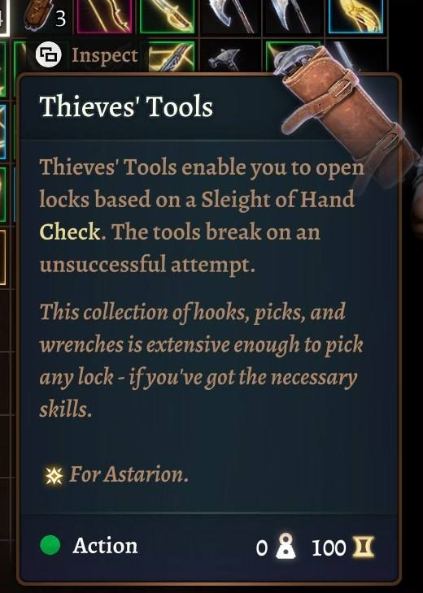
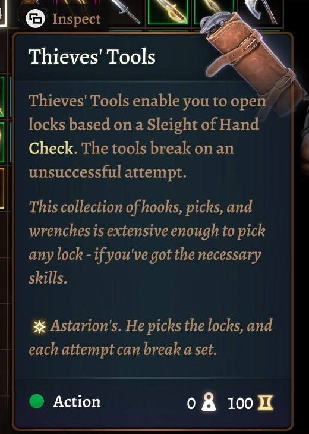
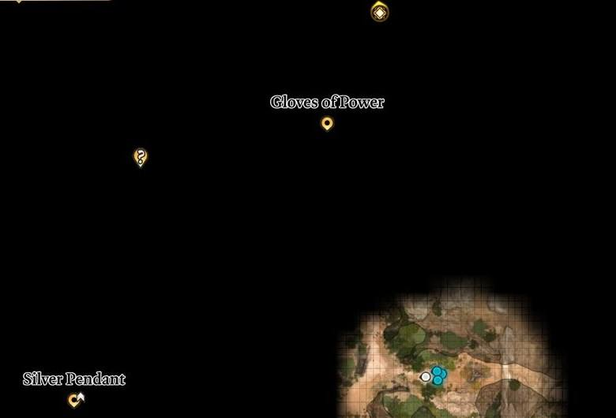
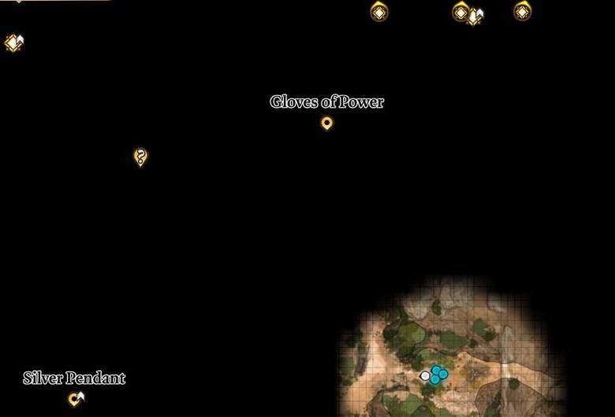

The three tiers
You choose when you install. The words are bound into the game's language file, so changing your mind means rebuilding the mod with the game closed. Your saves survive it.
Which one to pick
Minimal is for those who fear one thing: missing something for good. Most days, you won't know it's there.
Normal suits a first run. It tells you where to go and warns you of what could be lost. It never says why. In conversation you see a star or a red mark, and what the line leads to is yours to find out.
Extensive is for a second run, or for those who want the numbers. A short note names the rolls and the loot. Your journal keeps the rest. Expect spoilers.
| What you get | Minimal | Normal | Extensive |
|---|---|---|---|
| The idea | Never lose a thing by accident | Steered, not spoiled | The numbers, and more on request |
| Notes on the ground | 150Only what could slip away | 1,087What to do, and what could slip away | 1,087Also rolls, party advice, loot and tips |
| Dialogue tags | None | 1,496A mark. No words. | 1,496A mark, and what follows your click |
| Quest lines | 215How urgent. Nothing more. | 831A short nudge | 833Full advice, deadlines named |
| Item tooltips | None | 257Who it suits | 311Who it suits, and why |
| Map pins | None | 208Loot and secrets | 358Story steps as well |
| Treasure glints | None | 102 | 102 |
| Points of no return | 7Names your open quests | 7Names your open quests | 7Says what you stand to lose |
| Camp warnings | 16No outcome given | 16No outcome given | 16Says what will happen |
| More in the journal | None | 454A few lines that give nothing away | 721Other rolls, other ways in, what it costs |
Even Extensive holds its tongue
A dialogue tag only says what happens right after you click. If the price comes due much later, it says 'There will be a price, later' or 'This will repay you, in time', and nothing else. 145 lines keep their secrets this way.
The same spot at each tier









Hidden: Act 3 conversationShow dialogue tags at each tierHide

Hidden: early Dark Urge storyShow quest lines at each tierHide

There is no public download yet. Only the native Linux build has been tested.